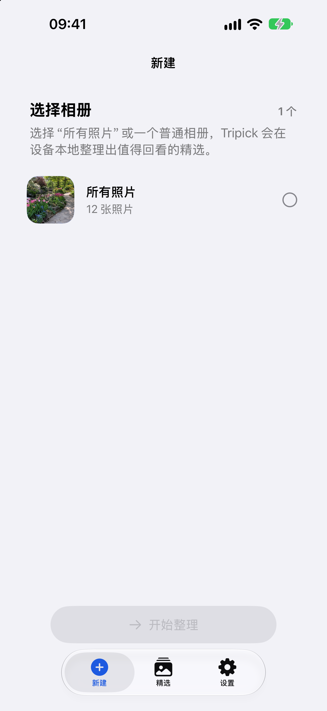
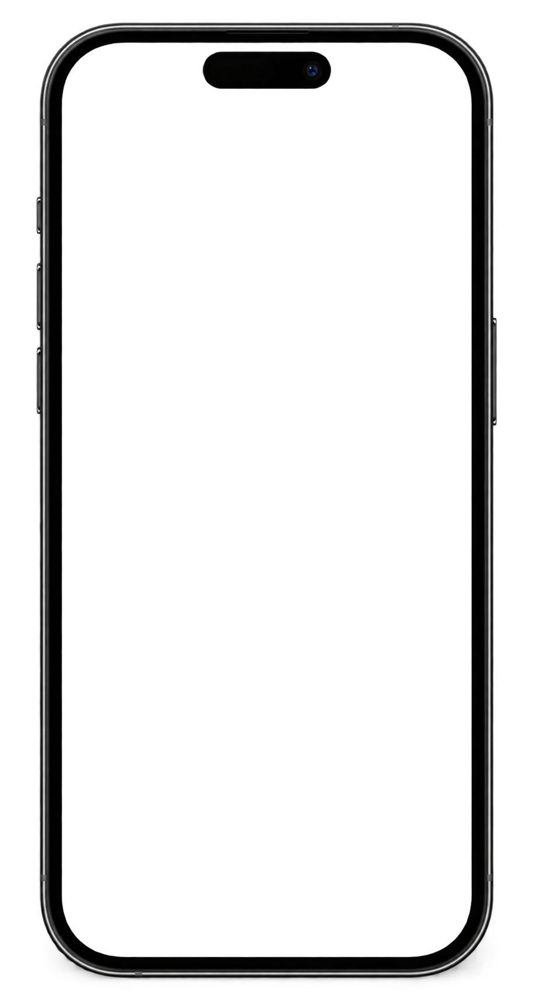

让每段旅程， 都留下几张 想回看的照片。
Tripick 会根据照片的拍摄时间，并在有位置信息时，帮你在设备本地整理出值得回看的精选。
看看整理过程照片留在你的 iPhone 上。整理结果由你复核。
按拍摄时间
地点信息（如有）

把旅程分成片段，回看时就更有脉络。
Tripick 根据照片的拍摄时间整理旅程；当照片带有地点信息时，也会用它帮助归拢。无需先手动翻完整个相册。
留下哪些照片，最后由你确认。
Tripick 在 iPhone 本地参考画面质量、人物状态、连拍与相似度，帮你减少重复、挑出值得回看的候选。你可以检查和调整，再确认写入 Apple Photos。
Tripick 不删除或改动原始照片。
你的照片，只在你的设备上整理。
照片、缩略图和分析结果都留在 iPhone 上，不会上传到 Tripick 服务器或第三方云端 AI。只有你复核并确认后，Tripick 才会在 Apple Photos 中创建或合并精选相簿、标记收藏。
阅读隐私说明设备本地分析
你复核、你确认
原始照片保持不变